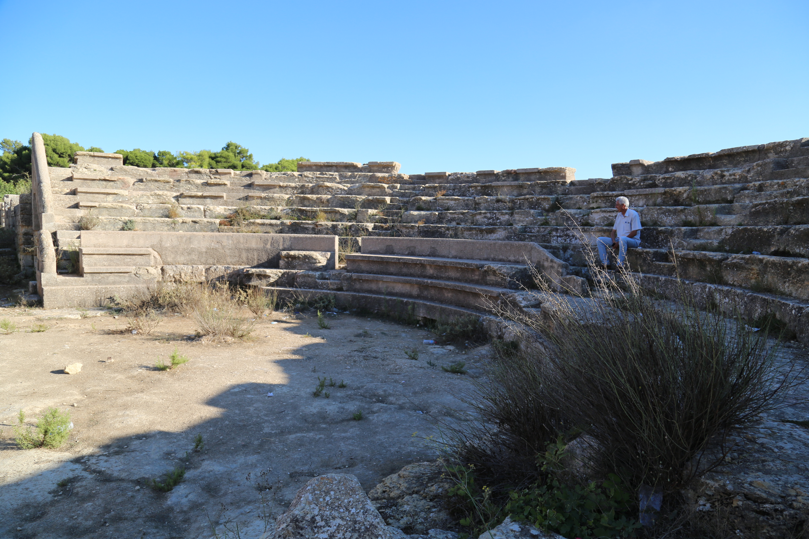
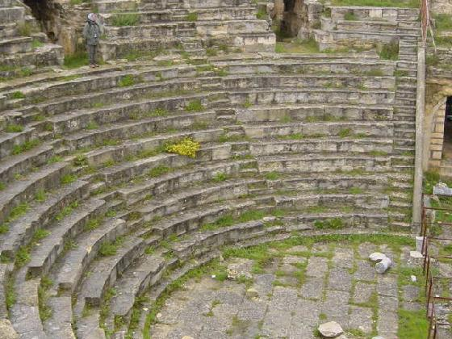
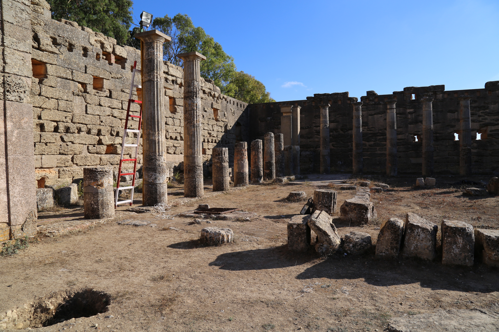
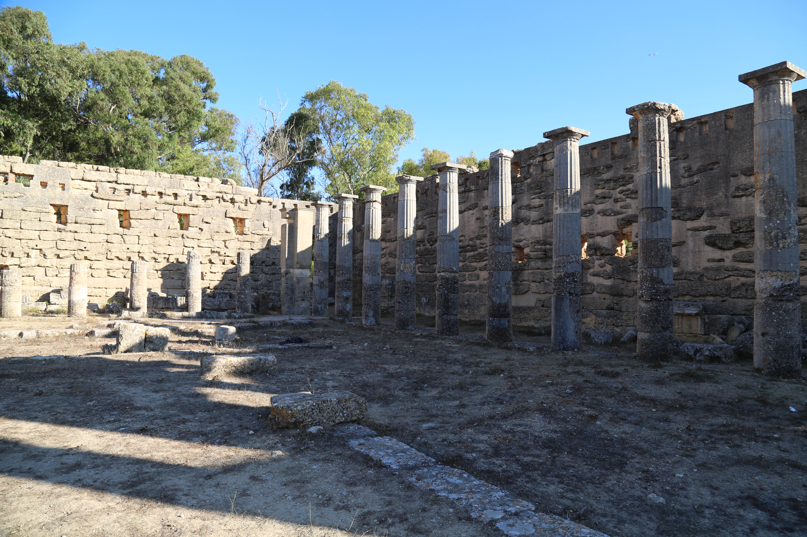
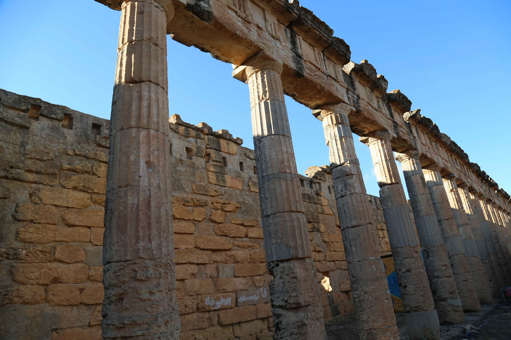
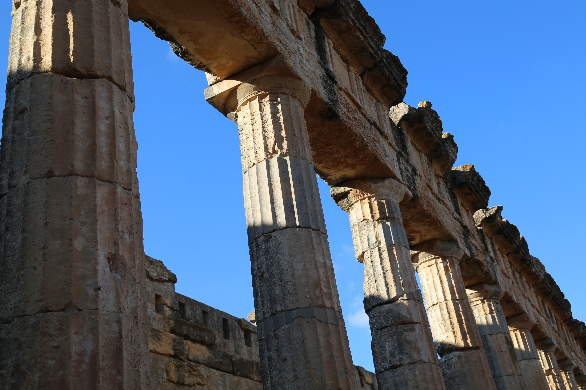
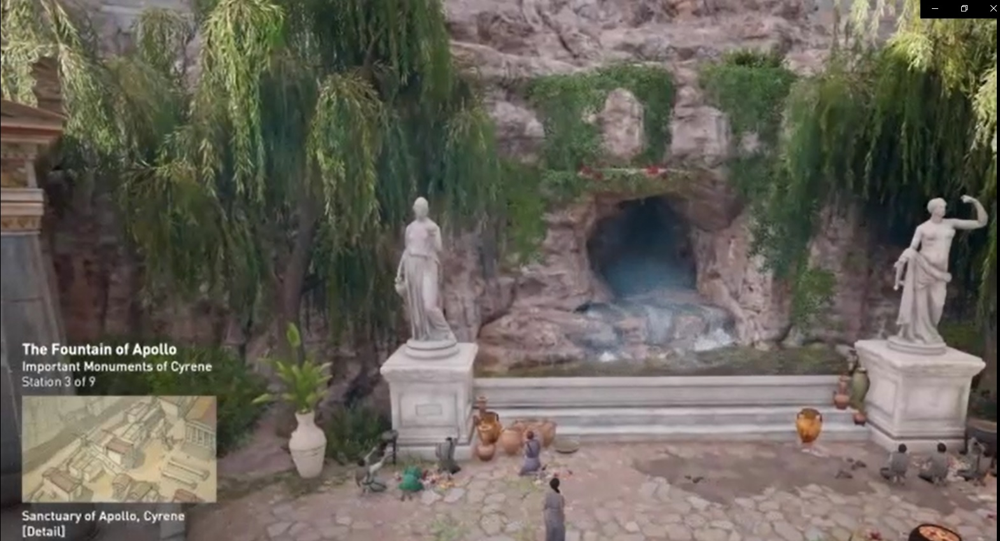
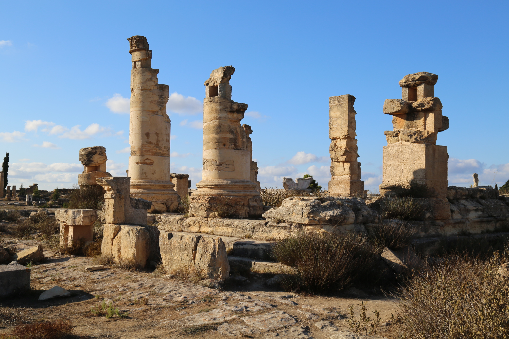
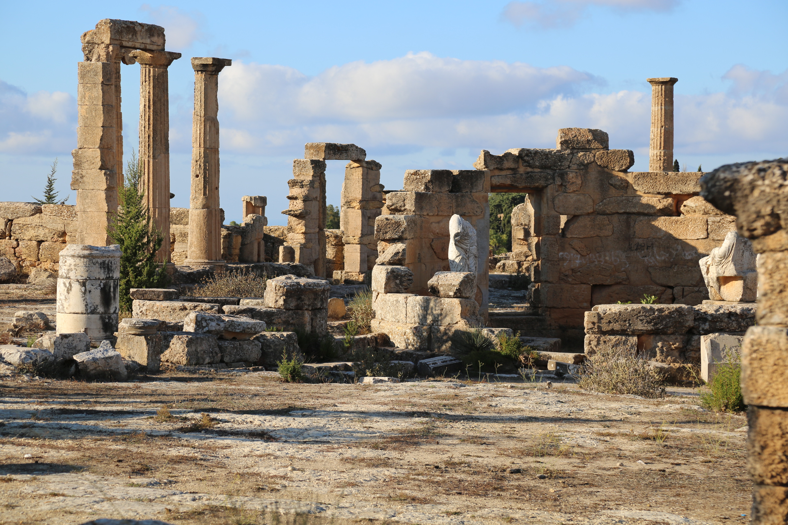

IMG-3A28B5C0990437F2world-heritage-LY-WH-000205-01.png259×194world-heritage · heritageLY-WH-000205-01 · thumbnail_only · unknown
IMG-32EE44EDCFD2405Fworld-heritage-052-mymaps-e786bf603064.webp259×194world-heritage · heritageLY-WH-000205-01 · thumbnail_only · unknown
IMG-18159FAC385F2193archaeological-theatre-001.jpg3840×2560archaeological-theatre · heritageno feature · high · unknown
IMG-351EBD0D6C9C973Aarchaeological-theatre-002.jpg560×420archaeological-theatre · heritageno feature · thumbnail_only · unknown
IMG-9DEB1D6F974EF0E7byzantine-basilica-001.jpg3840×2560byzantine-basilica · heritageno feature · high · unknown
IMG-FF77139FF6D27151byzantine-basilica-002.jpg3840×2560byzantine-basilica · heritageno feature · high · unknown
IMG-39BB48EF24484D32byzantine-basilica-003.jpg3840×2560byzantine-basilica · heritageno feature · high · unknown
IMG-AACA53B033C313AEbyzantine-basilica-004.jpg3840×2560byzantine-basilica · heritageno feature · high · unknown
IMG-B4E750BC9DBACE7Abyzantine-basilica-005.jpg3840×2560byzantine-basilica · heritageno feature · high · unknown
IMG-3204F45B5EAD6FE0cyrene-temple-of-zeus-001.jpeg1280×853features · heritageno feature · high · unknown
IMG-0C883F8A230A5E5Ffountain-of-apollo-001.jpg1570×850fountain-of-apollo · heritageno feature · high · unknown
IMG-BCDDCF4ADC24DB14greek-agora-001.jpg3840×2560greek-agora · heritageno feature · high · unknown
IMG-3E94D600194C1479greek-agora-004.jpg3840×2560greek-agora · heritageno feature · high · unknown
IMG-78BA295438D199F4cyrene-main-aerial-001.JPG5472×3648main-site · heritageno feature · high · unknown
IMG-99899EC2678C9DF4cyrene-main-aerial-002.JPG5472×3648main-site · heritageno feature · high · unknown
IMG-39BB48EF24484D32byzantine-basilica-003.jpg3840×2560review-required · heritageno feature · high · unknown
IMG-D41E93C247DDE035review-191c62ffa9.jpg3840×2560review-required · heritageno feature · high · unknown
IMG-CDC08285ABC64C94review-1d2324fa7c.jpg3840×2560review-required · heritageno feature · high · unknown
IMG-D169F224F12BDEB5review-1d49b988fd.jpg1225×908review-required · heritageno feature · high · unknown
IMG-BCDDCF4ADC24DB14greek-agora-001.jpg3840×2560review-required · heritageno feature · high · unknown
IMG-D29928EA1F263AD3review-2018e06bbc.jpg3840×2560review-required · heritageno feature · high · unknown
IMG-ABF1C997F81383F2review-218fa90dc8.jpg3840×2560review-required · heritageno feature · high · unknown
IMG-B686098D30E75955review-234db99c0d.jpg499×600review-required · heritageno feature · thumbnail_only · unknown
IMG-160B55F074AEB044review-38e6ec5fe0.jpg3840×2560review-required · heritageno feature · high · unknown
IMG-B4E750BC9DBACE7Abyzantine-basilica-005.jpg3840×2560review-required · heritageno feature · high · unknown
IMG-A6F80CF358A77B4Breview-4100b2f977.jpg3264×2448review-required · heritageno feature · high · unknown
IMG-3E94D600194C1479greek-agora-004.jpg3840×2560review-required · heritageno feature · high · unknown
IMG-0C883F8A230A5E5Ffountain-of-apollo-001.jpg1570×850review-required · heritageno feature · high · unknown
IMG-A4A9D81308278952review-589616e041.jpg3840×2560review-required · heritageno feature · high · unknown
IMG-9466EAB3C2A048D1review-58df37bbd4.png522×746review-required · heritageno feature · acceptable · unknown
IMG-351EBD0D6C9C973Aarchaeological-theatre-002.jpg560×420review-required · heritageno feature · thumbnail_only · unknown
IMG-AACA53B033C313AEbyzantine-basilica-004.jpg3840×2560review-required · heritageno feature · high · unknown
IMG-FF77139FF6D27151byzantine-basilica-002.jpg3840×2560review-required · heritageno feature · high · unknown
IMG-F1022A6058A1AD26review-65ae438b74.jpg267×189review-required · heritageno feature · thumbnail_only · unknown
IMG-08D125F309E7CBD7review-68d5861240.jpg3840×2560review-required · heritageno feature · high · unknown
IMG-ECF5247B4446E099review-6918021678.jpg640×183review-required · heritageno feature · acceptable · unknown
IMG-18159FAC385F2193archaeological-theatre-001.jpg3840×2560review-required · heritageno feature · high · unknown